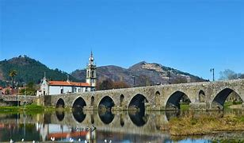

Informações
Aqui encontras alguns dados e curiosidades sobre Ponte de Lima.
| Demografia | População | 43.000 hab |
|---|---|---|
| Densidade populacional | 134 hab/km² | |
| Geografia | Área | 320 km² |
| Região | Minho_Lima | |
| País | Portugal | |
| Website | www.cm-pontedelima.pt | |
Curiosidades
- É considerada a vila mais antiga de Portugal, com foral atribuído em 1125.
- O Rio Lima era antigamente chamado de “Rio do Esquecimento” pelos romanos.
- A ponte medieval/romana que atravessa o rio tem 24 arcos, alguns originais do século I.
- Realiza anualmente as “Feiras Novas”, festa popular desde o século XIX.
- A gastronomia local destaca o arroz de sarrabulho e a lampreia do rio Lima.